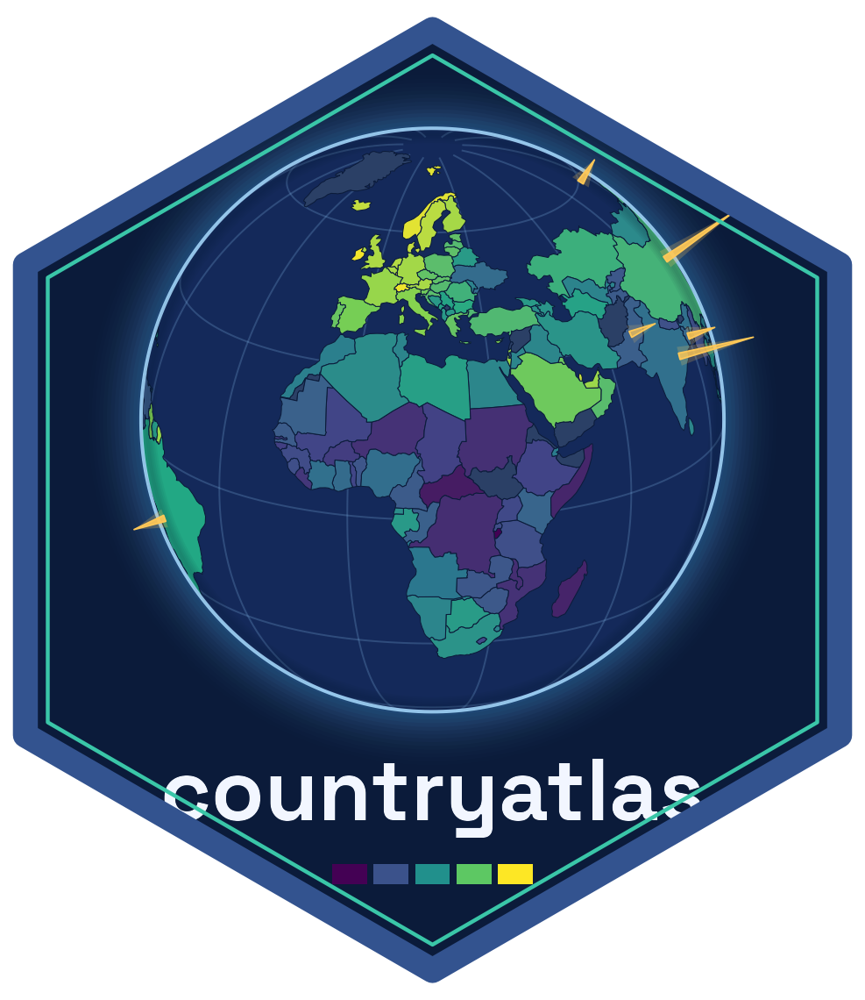

Roll countries up to region / income / continent
Source:R/analysis.R
aggregate_regions.RdAggregate a country-level value to a coarser grouping, optionally with population-weighted means.
Usage
aggregate_regions(
data,
value,
by = "region",
fun = "sum",
weight = NULL,
min_coverage = 2/3,
coverage_weight = NULL
)Arguments
- data
A country-level data frame.
- value
The value column to aggregate (unquoted).
- by
Grouping column(s) (character), default
"region". Combine with"year"for panel roll-ups.- fun
Aggregation:
"sum"(default),"mean","median","min","max"or"weighted_mean".- weight
Optional weight column (unquoted) for
"weighted_mean".- min_coverage
The smallest share of a group that has to report before an aggregate is computed, between 0 and 1. Default
2/3, the World Bank's rule for its own regional aggregates. Below it the group's value isNA, with a warning naming the group.0computes every group from whatever it has, as 3.0.0 did.- coverage_weight
Optional column (unquoted), typically population, whose share among the reporting members measures coverage instead of the count of countries. For
fun = "weighted_mean"it defaults toweight.
Value
A tibble of by, the aggregated value, n_countries,
n_reporting and coverage, plus coverage_weighted when a coverage
weight applies.
Coverage
A sum over a region that is missing its largest member is not that region's
total, and nothing about the number says so. So every row reports how much
of the group stands behind it: n_countries (members present in data),
n_reporting (members with a value), coverage (their share) and, with a
coverage weight, coverage_weighted (the share of that weight the reporting
members hold). A group whose coverage is below min_coverage is NA.
The default threshold is the World Bank's rule for the aggregates in the
World Development Indicators: a sum is not computed when more than a third
of the observations are missing, and a weighted mean is not computed when
missing data account for more than a third of the weights. Coverage is
tested on coverage_weighted when there is one, so fun = "weighted_mean"
follows the second rule by default. Note that only members present in data
are counted: a country with no row at all is invisible to this check, so
complete the frame against the full membership first (for example with
country_codes() or country_groups()) when that matters. Rows whose
grouping value is missing are reported but never withheld: they are not a
group with a membership to fall short of.
Groups with no data
Missing values are dropped before aggregating, so a group is summarised from
whatever it does have. A group with no non-missing value returns NA
rather than a figure: sum() would otherwise report 0, mean() NaN and
min()/max() -Inf/Inf, each of which reads as a real total for a
region we simply have no data for. Use audit_coverage() to see where those
gaps are.
See also
aggregate_groups() to aggregate by dated group membership.
Examples
df <- data.frame(iso3c = c("USA", "CAN", "BRA"),
region = c("North America", "North America", "Latin America"),
gdp = c(21, 1.7, 1.4))
aggregate_regions(df, gdp, fun = "sum")
#> # A tibble: 2 × 5
#> region gdp n_countries n_reporting coverage
#> <chr> <dbl> <int> <int> <dbl>
#> 1 Latin America 1.4 1 1 1
#> 2 North America 22.7 2 2 1
# A region missing a third of its members is not aggregated by default.
ssa <- data.frame(iso3c = c("NGA", "ZAF", "KEN"), region = "Sub-Saharan Africa",
gdp = c(NA, 400, 100), pop = c(223, 60, 55))
aggregate_regions(ssa, gdp, coverage_weight = pop, min_coverage = 0)
#> # A tibble: 1 × 6
#> region gdp n_countries n_reporting coverage coverage_weighted
#> <chr> <dbl> <int> <int> <dbl> <dbl>
#> 1 Sub-Saharan Africa 500 3 2 0.667 0.340